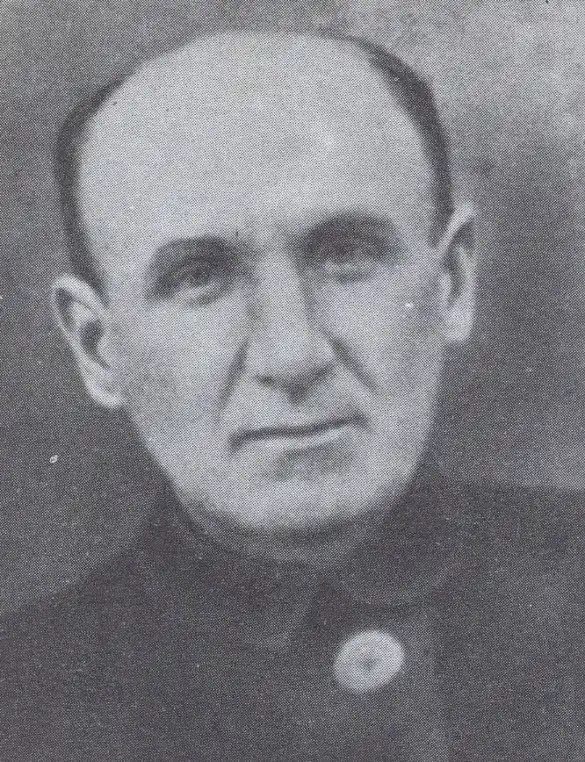

Він називав себе козаком. Бунт був його стихією. І час, у який він жив, дозволив сповна насолодитися нею. Він повставав проти царської та більшовицької влади, проти літературних традицій та норм світського життя. Революціонер і поет у всіх виявах свого надзвичайно строкатого життя, Чупринка врешті загинув від рук чекістів, які прийшли упокорити нашу землю.
Григорій Чупринка відомий сьогодні насамперед знавцям і шанувальникам української літератури. Після тривалого забуття його ім’я поступово посіло належне місце у пантеоні українських поетів першої третини минулого століття. Натомість повернення в нашу історію повною мірою не відбулося. Ще донедавна сам факт участі Чупринки у повстанському русі 1919-1921 років ставився під сумнів, висувалася версія про його смерть у 1919 році. Проте, коли знайомишся з фактами біографії, важко позбутися відчуття, що поезія була для нього лише засобом вгамування власної бунтарської сутності. Григорій цілковито посвячувався їй у час, коли неможливими були інші вияви протесту. Та беручись за перо, перетворював свої вірші на особливу форму бунту. Але той же вічно невгамовний характер не дозволив йому стати і "професійним революціонером" та посісти важливе місце серед діячів національної революції 1917-1918 років. Про цю особливість вдачі юнака ще з гімназійних років згадували однокласники. Один із них, Микола Галаган, у 1903 році намагався залучити Чупринку до підпільної діяльності в рамках Революційної української партії, та безрезультатно: Григорій "вічно мав конфлікти з поліцією, робив усякі "вибрики", а до систематичної революційної роботи не був здібний". Попри "нездібність" через два роки Чупринка стає активним діячем революції 1905 року та організатором селянських протестів на рідній Чернігівщині. Тоді ж його вперше заарештовано. Перебування в Лук'янівській в'язниці у Києві, контакти з іншими політичними в’язнями потроху перетворювали бунтаря на революціонера. Проте проявити себе у той час не було жодних можливостей: після 1907 року протестні рухи в Російській імперії цілковито придушено. Натомість на українському поетичному небосхилі з’являється молодий, амбітний і навіть скандальний поет Григорій Чупринка. "Вірний своїй вдачі, — писав про його життя в Києві 1907-1914 років Володимир Дорошенко, — що не терпіла утертих шляхів та не зносила громадської дисципліни, жив він правдивим бурлакою. Мешкав в якихось "сумесних" квартирах, де займав один з кутів. Водив компанію здебільшого з "бувшими людьми" по різних чайних та глухих куточках на Деміївці або на Подолі. Мав там серед злодіїв та проституток знайомих і приятелів, що любили його і називали нашим поетом. Відкидаючи з огидою облудний і фарисейський світ "приличних людей" за його неправду і низькопоклонство, почував себе Чупринка добре лише "на дні". Саме в цей період богемного життя і з’являються його найвідоміші поетичні збірки. Події 1917 року знову дали шанс проявитися бунтарству: захоплений революційною стихією, Григорій, який завжди вважав себе козаком, вступає до лав Першого українського козацького полку ім. Богдана Хмельницького. При цьому відмовляється від можливості працювати в полковій канцелярії, а виявляє бажання служити на передовій. "Разом із полком вирушив на фронт, — читаємо у Володимира Дорошенка, — держався дуже добре, був пильний до своїх обов’язків і мав великий вплив на козаків, які його любили і поважали. Давніших, передвоєнних "бешкетів" немов не бувало". Та армійські порядки і дисципліна виявилися надто важкими для богемного поета та невгамовного козака. Тож незабаром він попросив свого товариша Миколу Галагана, ад’ютанта командира полку, відпустити його "на волю". Проте вже дуже швидко Чупринці знову довелося повоювати. Цього разу не як солдату регулярної армії, а як отаману повстанського загону. "В липні 1919 року, — читаємо Дорошенка, — на доручення Повстанського комітету у Києві організовує Чупринка повстання на Чернігівщині з метою дезорганізації більшовицького запілля. Ім’я поета між селянством було таке популярне, що йому не треба було організовувати ніяких відозв. Чули люди, що "Григорій Оврамович отаманом став", і самі йшли до нього". Повстання закінчилося поразкою. Газета "Київський комуніст" гордо звітувала про "ліквідацію банди Чупринки". Сам Григорій опинився під арештом у Київському губернському ЧК. Публікація в комуністичній газеті із згадкою імені відомого поета привернула увагу цілого ряду письменників, які звернулися з клопотаннями до голови Всеукраїнського ЧК Лаціса. Їх підтримав тодішній нарком освіти радянської України Олександр Шумський, попросивши звернути увагу "на величезні заслуги Чупринки як поета". Ці клопотання врятували Григорію життя. Його не розстріляли, а відправили до Кожухівського концентраційного табору під Москвою. "Я був вивезений у Москву, — розповідатиме він згодом на допиті в ЧК, — і сидів у концтаборі один рік". Як йому вдалося повернутися з табору до Києва, невідомо. Натомість у тому ж протоколі знаходимо інформацію про ще одне засудження Григорія Чупринки: "Другий раз засуджений у січні 1921-го за антирадянську агітацію, сидів три тижні і засуджений був до висилки в Москву — не виїхав через відсутність коштів". Тож імовірність розстрілу, а згодом ув’язнення в таборі не змінили відверто антирадянської поведінки Чупринки. Більше того, незабаром він знову поринає у підпільну боротьбу. 1921 рік став переломним для української історії. Саме він мав вирішити (та, зрештою, й вирішив), чи вдасться українцям відродити свою державність. Попри те, що ще наприкінці попереднього року збройні сили Української Народної Республіки змушені були залишити рідні землі, більшовики на окупованих теренах почувалися дуже невпевнено. Адже тут продовжували боротьбу отаманські загони, особливо в районі Холодного Яру, а настрої населення загалом перетворювали окуповану країну на бочку з порохом, готову вибухнути кожної миті. Станом на весну 1921 року цілком імовірним було повалення більшовицької влади через повстання в Україні і долучення до них збройних сил УНР, інтернованих у Польщі. Власне, до такого сценарію готувалися як українці, так і більшовики. В еміграції створено Партизансько-повстанський штаб (ППШ) при Головній команді військ УНР на чолі з Юрієм Тютюнником. Його завданням була підготовка рейду армії на терени, окуповані більшовиками, і координація дій місцевих загонів, які піднімуть повстання. Незалежно від цього, 18 березня 1921 року в Києві група громадсько-політичних діячів на чолі з Іваном Чепілком створюють Всеукраїнський центральний повстанський комітет (ВУЦПК, або, як його називали чекісти, ЦУПКОМ). За короткий час учасники комітету налагодили зв’язок з іншими підпільними групами (зокрема з Військовою організацією січових стрільців, згодом перейменованою на Українську військову організацію) та повстанськими загонами (зокрема під керівництвом відомих отаманів Юліана Мордалевича та Федора Артеменка — "Орлика"). У час розбудови підпільної мережі до неї приєднується Григорій Чупринка. Він отримав завдання представляти комітет на військовому з’їзді отаманів Холодного Яру і домовитися про координацію дій. Паралельно з цим інший представник комітету Федір Наконечний налагодив зв’язок із керівниками УНР, які перебували в Польщі. Як не парадоксально, але саме цей, здавалося б, логічний і необхідний крок, спрямований на консолідацію сил, згодом відіграє фатальну роль для повстанців. Вони визнали верховенство ППШ Юрія Тютюнника та керівництва УНР на чолі з Симоном Петлюрою, і очікували від них вказівок щодо початку повстання. Тим часом закордонне керівництво залежало від рішень польського уряду, на допомогу якого розраховувало. Поляки, у свою чергу, після підписання в березні 1921 року Ризького мирного договору із більшовиками, не поспішали з виконанням зобов’язань, взятих перед своїми колишнім союзниками — українцями. Тож повстанці в Україні отримували з-за кордону вказівки за підписом Петлюри та Тютюнника про необхідність підготовки до загального зриву, в яких зокрема наголошувалося: "Жодного неорганізованого вибуху. Чекайте наказу!". Очікування було тривалим і вилилося в те, що відкладено загальний виступ, запланований на травень — червень. Тим часом більшовики не чекали, а завдали удару на випередження. Завдяки своїм інформаторам вони володіли даними як про події за кордоном, так і про ситуацію в українському повстанському комітеті і підпорядкованих йому структурах. "Контрреволюційна підпільна робота перерахованих організацій та осіб, — читаємо у звіті чекістів, — не виходила з поля зору КГЧК через майстерне введення внутрішніх інформаторів". Побоювання, що діяльність підпільного комітету, яка набирала обертів, вийде поза межі їхнього контролю, зокрема через "імовірний перехід ЦУПКОМу в Холодний Яр" спровокувало швидку реакцію чекістів. Операція розпочалася 18 червня 1921 року таємним затриманням керівників повстанського комітету. Місце зниклих посіли інші підпільники, але і їм не вдалося відірватися від "опіки" чекістів, тому арешти тривали. 23 червня серед інших затримано Григорія Чупринку. Через тиждень після цього керівництво київського ЧК прозвітувало про завершення розгрому повстанського комітету і ув'язнення всіх його членів. Після цього почалися допити, протоколи яких знаходимо в 17-томній справі № 225596. Як звинувачені у ній проходять 132 особи, в тому числі поет і революціонер Григорій Чупринка. Протокол його допиту датований 9 серпня 1921 року. Вражає у документі обсяг: всього чотири аркуші, заповнених недбалим почерком слідчого. Перший — анкета заарештованого, з якої, між іншим, дізнаємося, що "Чупринка Григорій Аврамович безпартійний, за походженням козак, соціальним становищем — літератор, притягався до відповідальності київським ЧК". З інших аркушів стає відомо, що Чупринка на пропозицію свого знайомого Бендрика Капитона вступив у підпільну організацію, яка ставила собі за мету повалення радянської влади і відновлення Української Народної Республіки.